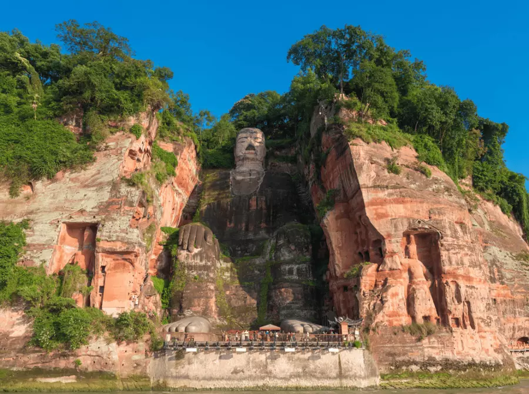

Parque del Buda Oriental

En Leshan, China, un enorme Buda de 71 m de altura, esculpido en el siglo VIII en el acantilado del monte Lingyun, vela sobre 3 ríos. Al comienzo, se concibió un sistema de drenaje interior para impedir la erosión fluvial. El Buda tenía a su cargo hacer más lentas las mareas, proteger los barcos e impedir la inundación de la aldea vecina. La construcción se inició en el año 713 y estuvo dirigida por un monje llamado Haitong. Este monje esperaba que Buda calmara las aguas turbulentas que destrozaban a los barcos que navegaban por el río.
está a 500 metros del Parque del Buda Oriental.